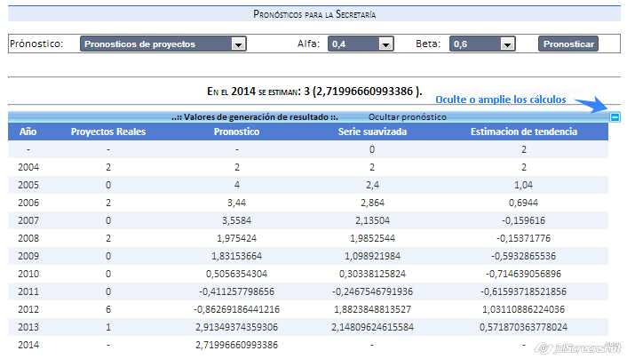
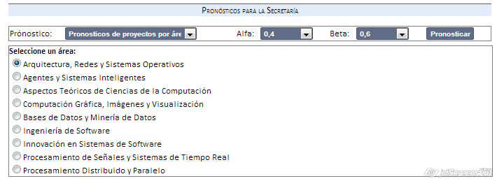

A través de esta herramienta se pueden calcular pronósticos para la secretaría. Utiliza el modelo de Winter.
Pronóstico anual: en base a datos históricos, cuantos proyectos se preveen para el año siguiente.
Pronóstico anual por área: en base a datos históricos, cuantos proyectos se preveen para el año siguiente en un área de investigación determinada.
Consideraciones:
Tenga en cuenta que si no hay más de tres años con datos para utilizar como referencia el pronóstico no será calculado.
Podrá observar el resultado general y además los calculos realizados.

Si el pronóstico es por área, deberá seleccionar cual se quiere pronosticar del panel que se despliega de manera automatica:

Created with the Personal Edition of HelpNDoc: Free EPub and documentation generator